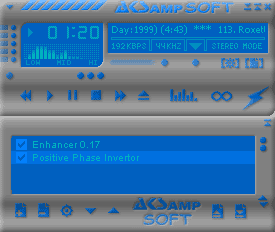
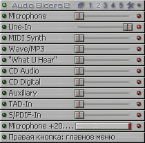
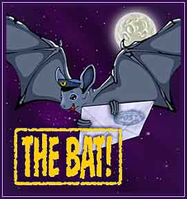

|
Здесь я хотел бы написать о тех программах, без которых я не представляю себе жизнь. Что-то вроде "kusaku рекомендует". Ссылки на их домашние страницы я решил не приводить, будет достаточно поискать их по названию на Яндексе.
Windows 2000 Professional (SP4)

Пожалуй, это самая удачная ОС от Microsoft, во всяком случае я так и не нашел в ней каких-либо недостатков.
Для поклонников ХРюши:
- 2kзанимает на винте максимум 700 Мб, после чисток - 500 Мб. ХРюша - 1200 и 700 после чистки
- Загрузка памяти в 2k - 85 Мб, после чистки - 60 Мб, у ХРюши - 160 и 120 соответственно.
- Бесячий ХРюшин интерфейс может быть использован в 2k подменой нескольких библиотек
- ХРюша никогда не советуется с тобой, надо ставить твикер для отмены ее самостоятельности
- У меня ХРюша падала чаще, чем 2k
- ХРюша рассчитана на людей с синдромом Дауна
Для поклонников 98 (98SE, 98ME и не дай бог ME, а может и 95):
- Запусти на P4 с 512 Мб RDRAM 100-200 Windows Media Playe'ов
удобно использовать bat-файл [q.bat]:
===============cut here==================
:loop
start "!" "C:\Program Files\Windows Media Player\mplayer2.exe"
goto loop
===============cut here==================
После этого попробуй все закрыть и нормально работать дальше.
- Никакой защиты информации
- FAT хоть и быстрее NTFS, но не надежен (достаточно затереть две таблицы :)
- Ядро DOS вышло из моды уже лет 5 назад
- Для любителей старых DOS игрушек: есть замечательный эмулятор SB DOS под NT
Для поклонников *nix:
- Чем ты в основном занимаешься в линуксе? Исправляешь баги или пишешь недостающий софт?
- Linux + Win2k = отлично живут вместе!
WinAMP 2.80 (c кучей плагинов)

Почему именно WinAMP а не Sonique или Apollo или не дай бог Windows Media Player 7-8-9 (и не WinAMP 3)? Эту программу я знаю уже на протяжении5 лет, для нее есть куча плагинов (можно использовать DirectX). Третий WinAMP не люблю, тормозной он какой-то. И видео смотреть на проигрывателе, на котором всю жизнь слушал музыку, непривычно. Остальные проигрыватели не имеют такой поддержки плагинами, например, с помощью WinAMP'а можно:
- "на ходу" передирать AudioCD в MP3, OGG или WMA
- записывать с тюнера прямо в MP3
- слушать практически любой формат файлов
- есть фейдер между треками
- любые эффекты
- исправлять фазу у кривых китайских наушников
AudioSliders 2.41

Это очень компактный регулятор громкости, подходит для всех звуковых карт. На данный момент программа сменила разработчика, и я не сказал бы, что он пошел по правильному пути, так что юзаю старую версию.
- все действия можно настраивать через хоткеи
- поддерживает дополнительные кнопки на клаве
- OSD
- есть запоминание и восстановление настроек
- управляет WinAMP'ом (и не только им)
- кое-что еще
MyIE0.8+

Этот браузер ничего, кроме восхищения вызывать не может. В нем всегда чувствуешь себя комфортно в любых местах Сети:
- использует движок от IE
- автоматическое подавление всплывающих окон
- фильтрация баннеров и рекламы
- мгновенное переключение прокси-серверов
- собственная система плагинов
- авто-прокрутка текста
- однооконный MDI-интерфейс
- все настройки хранит в ini-файле
- кое-что еще
The Bat! 1.61+

Лучший почтовик - это признано всеми. В сочетании с плагином антивируса dr.Web - отлично сочетается
FAR 1.70b5 (c кучей плагинов)
Отечественный файловый менеджер, как всегда опережает всех по возможностям и гибкости настроек. Консольное исполнение меня лично только привлекает. FAR может все!
dr.Web 4.29+
Отличный антивирус. Делает свое дело и никому не мешает.
Punto Switcher 1.60
Исправляет "ghbdtn!" на "привет!", "зДРАСТЕ" на "Здрасте" и рисует красивый флажок вместо "Ru" и "En" в трее :)
Список можно было бы продолжить и дальше, но у каждого могут быть свои вкусы и род занятий.
|